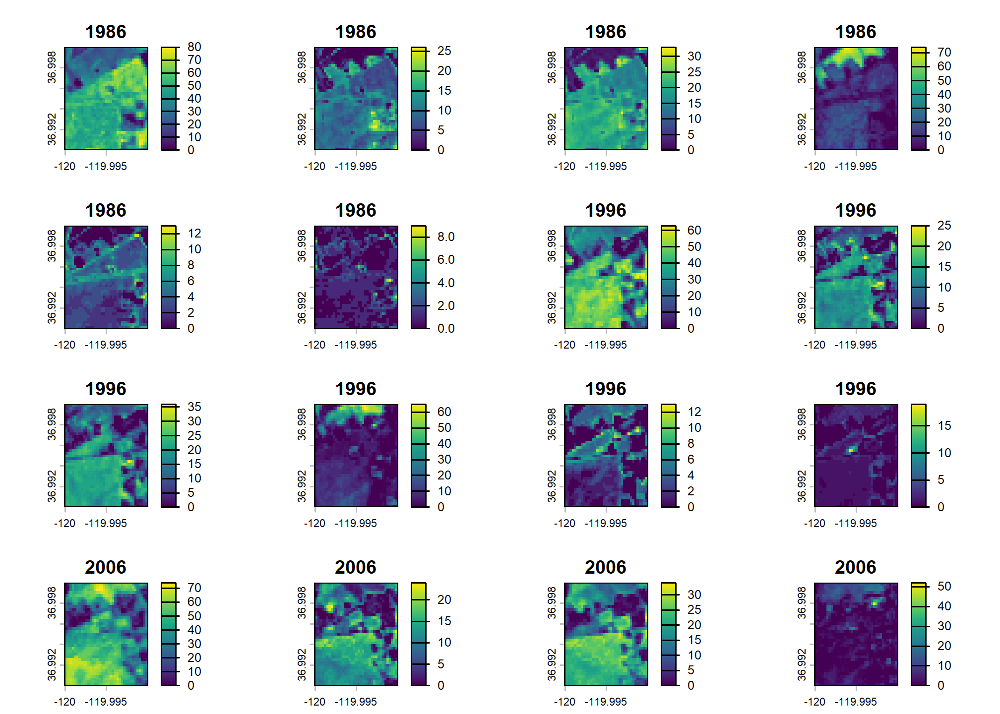

The goal of {rapr} is to provide a simple R interface to ‘Rangeland Analysis Platform’ (RAP) products. See https://rangelands.app/products and citation("rapr") for more information.
Installation
You can install {rapr} from CRAN:
install.packages("rapr")You can install the development version of {rapr} from GitHub with:
# install.packages("remotes")
remotes::install_github("brownag/rapr")Sources, Products, and Band Information
Two sets of gridded RAP products are available (see get_rap() source argument). Also, you can access the API endpoint for the 16-day production tabular data (see get_rap_production16day_table()).
"rap-30m"is Landsat-derived and has approximately 30 meter resolution in WGS84 decimal degrees ("EPSG:4326"). This is the data source that has been used in the ‘rapr’ package since 2022."rap-10m"is Sentinel 2-derived and has 10 meter resolution in the local WGS84 UTM zone ("EPSG:326XX", where XX is the two digit UTM zone number). It is a newer (2025) data source.
For "rap-30m" you can query several Landsat derived annual biomass, cover, and Net Primary Productivity products from 1986 to present:
-
product = "vegetation-biomass"returns two layers per year:- 2 Bands:
"annual forb and grass","perennial forb and grass"(lbs / acre)
- 2 Bands:
-
product = "vegetation-cover"returns six layers per year:- 6 Bands:
"annual forb and grass","bare ground","litter","perennial forb and grass","shrub","tree"(% cover)
- 6 Bands:
-
product = "vegetation-npp"returns four layers per year:- 4 Bands:
"annual forb and grass","perennial forb and grass","shrub","tree"(NPP; kg*C/m^2)
- 4 Bands:
For "rap-10m" you can query several Sentinel 2 derived cover products at 10 meter resolution from 2018 to present:
-
product = "pft"returns fractional cover estimates of plant functional types:- 6 Bands:
"annual forb and grass","bare ground","litter","perennial forb and grass","shrub","tree"(% cover)
- 6 Bands:
-
product = "gap"returns canopy gap estimates for four canopy gap size classes:- 4 Bands:
"Gaps 25-50 cm","Gaps 51-100 cm","Gaps 100-200 cm","Gaps >200 cm"(% cover)
- 4 Bands:
-
product = "arte"returns cover estimates of Artemisia species, including A. arbuscula, A. cana, A. nova, A. tridentata, and A. tripartita.- 1 Band:
"Artemisia spp."(% cover)
- 1 Band:
-
product = "iag"returns fractional cover estimates of Bromus tectorum, B. arvensis, B. rubens, B. hordeaceus, Eremopyrum triticeum, Schismus spp., Taeniatherum caput-medusae, and Ventenata dubia.- 1 Band:
"invasive annual grass"(% cover)
- 1 Band:
-
product = "pj"returns fractional cover estimates of Juniperus monosperma, J. occidentalis, J. osteosperma, J. scopulorum, Pinus edulis, and P. monophylla.- 1 Band:
"pinyon-juniper"(% cover)
- 1 Band:
Temporary Files
Large requests may generate intermediate objects that will be stored as temporary files. See terra::tmpFiles() to view the file paths. These files will be removed when an R session ends.
Alternate Specification of Area of Interest
In lieu of a spatial object from {terra}, {raster}, {sf} or {sp} packages you may specify a bounding box using a numeric vector containing the top-left and bottom-right coordinates (xmin, ymax, xmax, ymin) in WGS84 longitude/latitude decimal degrees. This corresponds to the conventional order used in the gdal_translate -projwin option. e.g. get_rap(x = c(-120, 37, -119.99, 36.99), ...).
Native Resolution and Projection Systems
Native cell resolution of "rap-30m" is approximately 30m x 30m in WGS84 geographic coordinate system (longitude, latitude). Native cell resolution of "rap-10m" is 10m x 10m in the local (projected) WGS84 Universal Transverse Mercator (UTM) system.
For "rap-10m" requests spanning multiple UTM zones, either pass a SpatRaster object as x or specify template argument. In lieu of a user-specified grid system for multi-zone requests, a default CONUS Albers Equal Area projection ("EPSG:5070") with 10 m resolution will be used. See rap_projection() for options and details.
Example
This example shows how to use a {terra} SpatVector containing a rectangular polygon with rapr::get_rap() to obtain RAP grids for the corresponding extent. {terra}, {raster}, {sf} and {sp} objects are all supported input types. Any spatial object used should have its Coordinate Reference System defined, as the input coordinates will be projected to the source data grid system.
library(terra)
#> Warning: package 'terra' was built under R version 4.5.1
#> terra 1.8.56
library(rapr)
res <- get_rap(
vect("POLYGON ((-120 36.99,-119.99 37,-120 37,-120 36.99))",
crs = "EPSG:4326"),
version = "v3",
product = "vegetation-cover",
years = c(1986, 1996, 2006, 2016),
verbose = TRUE
)
#> Processing: http://rangeland.ntsg.umt.edu/data/rap/rap-vegetation-cover/v3/vegetation-cover-v3-1986.tif
#> Processing: http://rangeland.ntsg.umt.edu/data/rap/rap-vegetation-cover/v3/vegetation-cover-v3-1996.tif
#> Processing: http://rangeland.ntsg.umt.edu/data/rap/rap-vegetation-cover/v3/vegetation-cover-v3-2006.tif
#> Processing: http://rangeland.ntsg.umt.edu/data/rap/rap-vegetation-cover/v3/vegetation-cover-v3-2016.tif
#> Cropping and writing result to memory or temporary file
res
#> class : SpatRaster
#> size : 37, 37, 24 (nrow, ncol, nlyr)
#> resolution : 0.0002694946, 0.0002694946 (x, y)
#> extent : -120, -119.99, 36.99002, 36.99999 (xmin, xmax, ymin, ymax)
#> coord. ref. : lon/lat WGS 84 (EPSG:4326)
#> source(s) : memory
#> names : veget~grass, veget~round, veget~itter, veget~grass, veget~shrub, veget~_tree, ...
#> min values : 0, 0, 0, 0, 0, 0, ...
#> max values : 80, 26, 33, 74, 13, 9, ...
#> unit : % cover
#> time (years): 1986 to 2016 (4 steps)
plot(res)
In lieu of a spatial object from {terra}, {raster}, {sf} or {sp} packages you may specify a bounding box using a numeric vector containing xmin, ymax, xmax, ymin in WGS84 longitude/latitude decimal degrees (corresponding to order used in gdal_translate -projwin option). e.g. get_rap(x = c(-120, 37, -119.99, 36.99), ...).
Citation
#> To cite rapr in publications use:
#>
#> Brown A (2025). _rapr: Interface to Rangeland Analysis Platform (RAP)
#> Vegetation Biomass and Cover Products_. R package version 1.1.0,
#> <https://CRAN.R-project.org/package=rapr>.
#>
#> Allred, B.W., S.E. McCord, T.J. Assal, B.T. Bestelmeyer, C.S. Boyd,
#> A.C. Brooks, S.M. Cady, S.D. Fuhlendorf, S.A. Green, G.R. Harrison,
#> E.R. Jensen, E.J. Kachergis, C.M. Mattilio, B.A. Mealor, D.E. Naugle,
#> D. O'Leary, P.J. Olsoy, E.S. Peirce, J.R. Reinhardt, R.K. Shriver,
#> J.T. Smith, J.D. Tack, A.M. Tanner, E.P. Tanner, D. Twidwell, N.P.
#> Webb, and S.L. Morford. 2025. Estimating rangeland fractional cover
#> and canopy gap size class with Sentinel-2 imagery. bioRxiv.
#> https://doi.org/10.1101/2025.03.13.643073
#>
#> Jones, M.O., N.P. Robinson, D.E. Naugle, J.D. Maestas, M.C. Reeves,
#> R.W. Lankston, and B.W. Allred. 2021. Annual and 16-Day Rangeland
#> Production Estimates for the Western United States. Rangeland Ecology
#> & Management 77:112-117. http://dx.doi.org/10.1016/j.rama.2021.04.003
#>
#> Allred, B. W., B. T. Bestelmeyer, C. S. Boyd, C. Brown, K. W. Davies,
#> L. M. Ellsworth, T. A. Erickson, S. D. Fuhlendorf, T. V. Griffiths,
#> V. Jansen, M. O. Jones, J. Karl, J. D. Maestas, J. J. Maynard, S. E.
#> McCord, D. E. Naugle, H. D. Starns, D. Twidwell, and D. R. Uden.
#> 2021. Improving Landsat predictions of rangeland fractional cover
#> with multitask learning and uncertainty. Methods in Ecology and
#> Evolution. http://dx.doi.org/10.1111/2041-210x.13564
#>
#> Robinson, N. P., M. O. Jones, A. Moreno, T. A. Erickson, D. E.
#> Naugle, and B. W. Allred. 2019. Rangeland productivity partitioned to
#> sub-pixel plant functional types. Remote Sensing 11:1427.
#> http://dx.doi.org/10.3390/rs11121427
#>
#> To see these entries in BibTeX format, use 'print(<citation>,
#> bibtex=TRUE)', 'toBibtex(.)', or set
#> 'options(citation.bibtex.max=999)'.